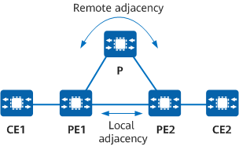

Fundamentals
For a coexistent local and remote LDP session, the local and remote LDP adjacencies are connected to the same peers so that both the adjacencies are used to maintain the peers.
On the network shown in Figure 1, when the local LDP adjacency is deleted due to a failure in the link to which the adjacency is connected, the peer type may change, without affecting the peer's presence or status. (The peer type is determined by the adjacency type, which can be local, remote, or coexistent local and remote.)
When a link becomes faulty or is recovering from a fault, the peer type may change. If this is the case, the type of the session associated with the peer changes accordingly. However, the session is not deleted or set to down.
Application Scenario
Figure 1 Coexistent local and remote LDP session
Coexistent local and remote LDP sessions are typically used in L2VPN scenarios. On the network shown in Figure 1, L2VPN services are deployed between PE1 and PE2. The following describes how to configure a coexistent local and remote LDP session and how the services are processed if the directly connected link between PE1 and PE2 becomes faulty and then recovers.
- Enable MPLS LDP on PE1 and PE2, which are directly connected, to set up a local session between them. Configure PE1 and PE2 as each other's remote peer to set up a remote session between them. In this case, both a local adjacency and a remote adjacency are set up between PE1 and PE2. The session between them is a coexistent local and remote LDP session. L2VPN signaling messages can then be transmitted through the session.
- When the physical link between PE1 and PE2 goes down, so too does the local LDP adjacency. The route between PE1 and PE2 is still reachable through the P, which means that the remote LDP adjacency remains up. The session changes to a remote session so that it can remain up. The L2VPN does not detect the session change or delete the session. As such, the L2VPN does not need to disconnect and then recover services, preventing service interruptions in this process.
- When the fault is rectified, the link between PE1 and PE2 and the local LDP adjacency go up again. The session then reverts to a coexistent local and remote LDP session and remains in the up state. Again, the L2VPN does not detect the session change or delete the session, preventing service interruptions in this process.